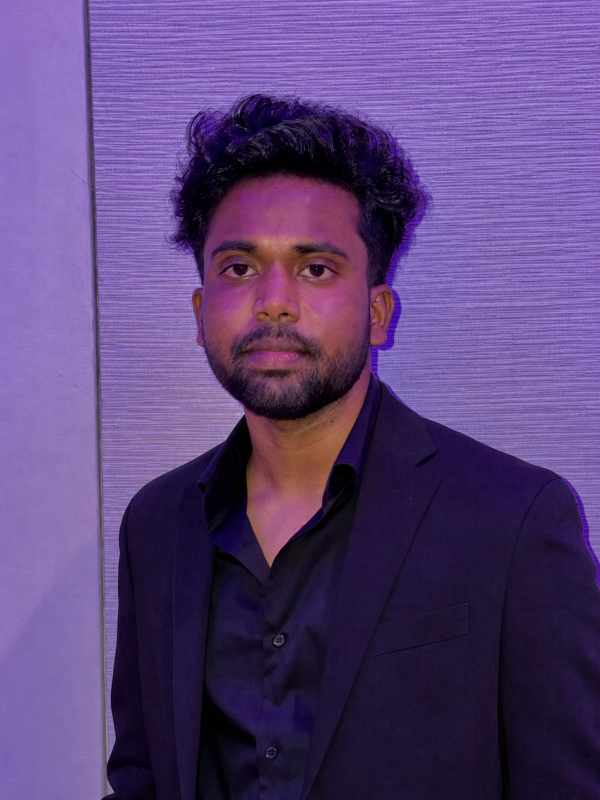

DINO-WM
Implemented a VQ-VAE-based quantized variant of DINO-WM using pretrained DINOv2 visual representations for zero-shot planning and robotic manipulation, achieving a 4% performance improvement.
Visit DINO-WM ↗
NYU Computer Engineering graduate and Research Assistant at the AI4CE Lab, working on world models, multimodal learning, robotic planning, and 3D scene understanding.
I build machine-learning systems that connect advanced research with real-world robotics, autonomous systems, and document intelligence.
Featured Research
Research at the intersection of world models, robotic planning, and visual perception.
Implemented a VQ-VAE-based quantized variant of DINO-WM using pretrained DINOv2 visual representations for zero-shot planning and robotic manipulation, achieving a 4% performance improvement.
Visit DINO-WM ↗Developed and improved the Multiview Scene Graph model for multiview perception and 3D scene understanding using the large-scale ScanNet++ image and video dataset, improving MSG edge IoU by 7%.
Created a large-scale training dataset containing more than 1,000 scenes from the ScanNet++ dataset for MSG model development and evaluation.
Visit MSG ↗New York, NY
Master of Science in Computer Engineering
CGPA: 3.8/4.0
August 2024 – May 2026
Visakhapatnam, India
Bachelor of Technology in Computer Science and Engineering
CGPA: 3.7/4.0
August 2019 – May 2023
Python, Go, JavaScript, TypeScript, C/C++, Java
React, HTML, CSS, JavaScript/TypeScript
Node.js, FastAPI, Flask, REST APIs, Distributed Systems, Asynchronous Services
PyTorch, TensorFlow, JAX, torchvision, Core ML
CUDA, OpenCL, TensorRT, TVM, XLA
Unit Testing, End-to-End Testing, CI/CD, Docker, Kubernetes, AWS Lambda, AWS Cognito, Amazon S3, AWS SageMaker, GCP Vertex AI, Linux
PostgreSQL, MongoDB, Redis, SQL
Git, Terraform, Ansible, MLflow, Airflow, Prometheus, Grafana, Weights & Biases, Agile/Scrum Methodologies
September 2024 – Present · New York, NY
January 2025 – May 2025 · New York, NY
September 2024 – December 2024 · New York, NY
August 2023 – August 2024 · Bengaluru, India
December 2022 – July 2023 · Bengaluru, India
Pretrained I-JEPA on Waymo and CARLA datasets and fine-tuned with ADL-JEPA for label-efficient steering-angle prediction, achieving 99.3% accuracy and validating in CARLA.
Python · PyTorch · CARLA · Waymo · ADL-JEPA
View on GitHub ↗Enhanced VSLNet with LaViLa vision-language embeddings, stacked encoders, and vision-enhancer attention for Ego4D action localization, achieving 12.14 mIoU.
PyTorch · Ego4D · Omnivore · LaViLa
View on GitHub ↗Built model-serving and monitoring components for a scientific-paper summarization system using transformer models, arXiv data, Flask APIs, and production observability tooling.
BART · Flask · Prometheus · Grafana · MLOps
View on GitHub ↗Implemented foundational data structures and algorithms in C, including queues, stacks, linked lists, heaps, tries, trees, graph traversal, Dijkstra, Prim, and Huffman coding.
C · Data Structures · Graph Algorithms
View on GitHub ↗Developed a campground web application with user authentication, reviews, and RESTful CRUD operations for creating and managing campground listings.
JavaScript · MongoDB · Express.js · Node.js
View on GitHub ↗Enhanced real-time posture detection by fine-tuning MoveNet with TensorFlow, achieving 93.73% accuracy, and built a user-friendly CNN-powered interface for improved accessibility.
Python · Flask · TensorFlow.js · MoveNet · CNN
View on GitHub ↗Created a convolutional neural-network application that classifies traffic signs, with model experimentation in Jupyter and a Flask-based prediction interface.
CNN · TensorFlow · Keras · Flask · Jupyter
View on GitHub ↗Improved MSG edge IoU by 7% and DINO-WM planning and manipulation performance by 4% through research at NYU AI4CE Lab.
Served separately as Teaching Assistant for Prof. Yann LeCun’s Deep Learning course and NLP Section Leader, leading labs on HPC, RLHF, and information retrieval while mentoring more than 200 students.
Email: vn2263@nyu.edu
Phone: +1 (347) 798-7171
Location: New York City
GitHub: github.com/nvklaxmikanth
LinkedIn: linkedin.com/in/nvklaxmikanth